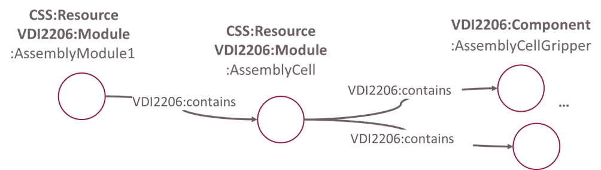

An ontological model of a resource with its modules and components is the foundations of our approach. Having the resource structure modeled according to our ontolog allows for capabilities and skills to be linked to the structural elements that provide said capabilities and skills. In addition, resource properties may be relevant for capability matching or other subsequent steps of analysis.
The following image is an examplified snippet showing a resource structure represented using our ontology, more specifically the ontology design pattern of VDI 2206. It contains a resource :AssemblyModule1, which consists of a module :AssemblyCell. This module is in turn made up of components.  Information of a resource's structure is typically defined during mechanical engineering using 3D CAD models and bill of materials. We make use of existing CAD models and automatically convert them to the resource aspect of our capability and skill ontology. Using a STEP-to-JSON mapper, we fist create a JSON tree from STEP models. This JSON tree is then converted to our capability and skill ontology.
For users, this is all done with a simple button click. The resoure mapping functionality is integrated into CaSkade MES, our capability-based manufacturing execution system.